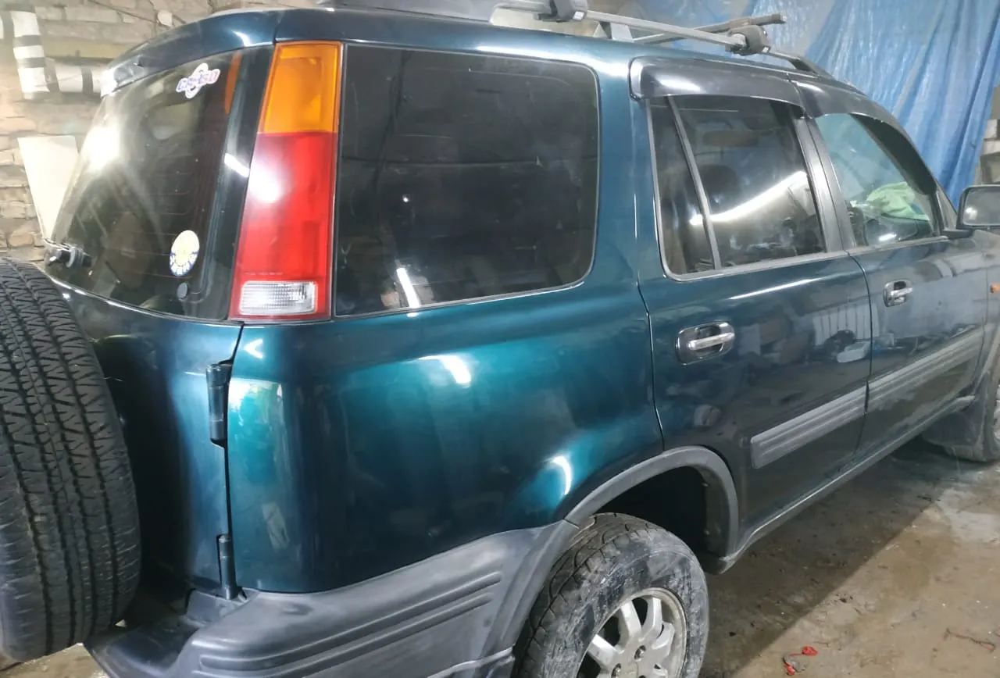
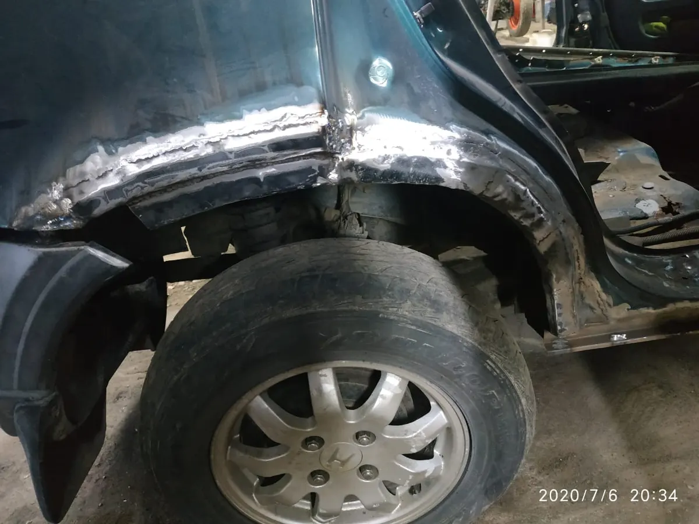
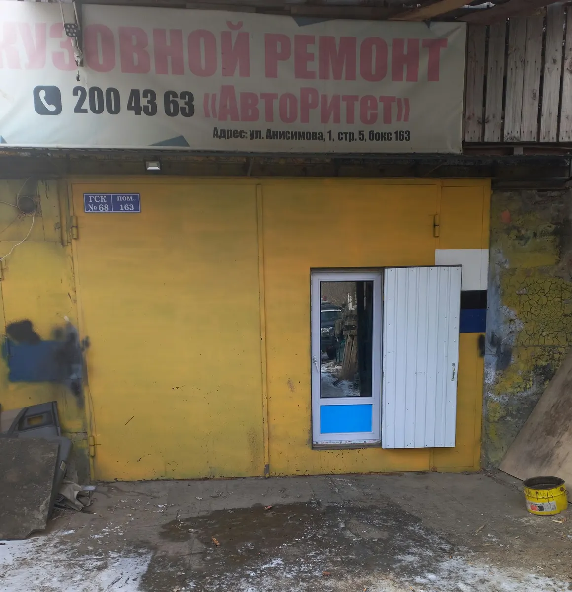
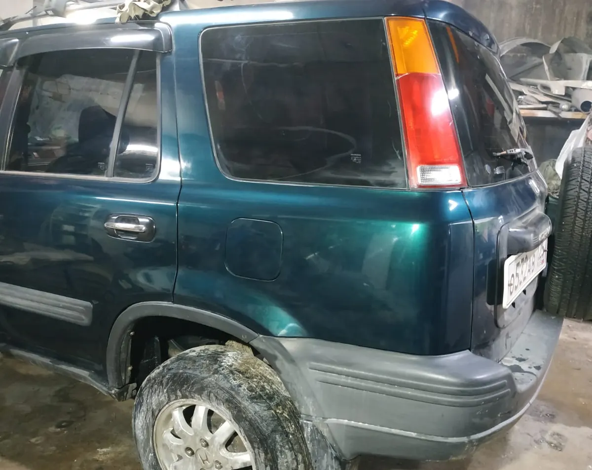

Кузовной ремонт и покраска · Владивосток
Кузовной ремонт и покраска во Владивостоке: цены до записи
Выберите услугу, день и время - чат откроется с готовым текстом. Прайс с карточки виден до звонка, работы сопровождают фотоотчётом.
- Ежедневно с 11:00 до 20:00
- Рейтинг 4,6, 37 оценок
- Покраска, рихтовка, сварка, антикор, гарантия на работы

Что делают
Входит
- Кузовной ремонт и покраска
- Рихтовка вмятин, ремонт порогов и арок
- Сварочные работы
- Антикоррозийная обработка днища и рамы
Отдельно, если нужно
- Гарантия на ремонт, по отзыву клиентки
- Фотоотчёт по этапам работы, по отзывам клиентов
- Помощь с подбором детали, по отзыву клиентки
Услуги и цены
Цены с вкладки «Товары и услуги» карточки на Яндекс.Картах. Итоговую стоимость называют после осмотра автомобиля.
Покраска
- Покраска детали автомобиляпокраска одной детали6 000 ₽
- Покраска двери, крыла, порогав цвет автомобиля, без ремонта6 000 ₽
- Локальная покраска бамперапокраска части бампера5 000 ₽
- Покраска бокового зеркала1 500 ₽
- Покраска кузова целикомв круг, цена зависит от марки автомобиля60 000 ₽
Ремонт и рихтовка
- Ремонт крыла с покраской6 000 ₽
- Рихтовка вмятин на двери или крыше3 000 ₽
- Рихтовка вмятин на крыле или бампере1 000 ₽
- Ремонт порогов6 000 ₽
- Сварочные работы3 000 ₽
Антикоррозийная обработка
- Колёсные аркиантикоррозийная обработка колёсных арок1 500 ₽
- Днищеобработка днища20 000 ₽
- Рамаантикоррозийная обработка рамы25 000 ₽
Карточка помечена как «давно не обновлялось», цены с вкладки услуг, источник - Яндекс Исполнители. Это выборка, актуальные цены уточняйте при записи.
Как записаться
- 01
Выберите услугу, день и время
В блоке записи вверху страницы.
- 02
Нажмите «Записаться»
Откроется чат с готовым сообщением - останется его отправить.
- 03
Дождитесь подтверждения
Мастер уточнит марку автомобиля и объём работ.



Что говорят клиенты
Не отличить от новой
Клиентка пишет про покраску крыльев и ремонт арок после ДТП на Lexus RX.
Раньше срока
Клиенты пишут, что работы сдали раньше оговорённого срока.
Фотоотчёт по этапам
Клиенты отмечают фотоотчёты в процессе ремонта.
Честные цены
Клиенты называют цены честными и приятными.
Отзывы с Яндекс.Карт
«Привозила Lexus RX после ДТП. Покрасили задние крылья, переварили арки, теперь не отличить от новой. Все изгибы и кантики вывели как с завода, после ремонта дали гарантию, спасибо за качество.»
ольга м. · 29 сентября 2025
«Долго искала где покрасить свой капот своей машины.По рекомендации знакомых заехала в этот автосервис и осталась в полном восторге!цвет подобрали идеально,и цена приятно удивила!!»
Гамеева Анастасия · 17 октября 2025
«Ремонт порога и покраска крыла всё сделали, работники вежливые и объяснили порядок работ. Качество покраски на высоте, тон совпал, запах растворителя выветрился быстро»
Алина Шевченко · 18 июня 2026
Отзывы с карточки на Яндекс.Картах, без правок.
Частые вопросы
Где находится мастерская?
Владивосток, улица Анисимова, 1, строение 5.
Как записаться?
Выберите услугу, день и время в блоке записи вверху страницы - откроется чат с готовым сообщением. Можно позвонить: +7 (924) 730-43-63.
Сколько стоит покраска детали?
По карточке - 6000 ₽ за одну деталь: дверь, крыло, порог. Покраска бампера частично - 5000 ₽, кузова целиком - от 60 000 ₽ в зависимости от марки.
Ремонтируете ли вы после ДТП?
Да. Клиенты пишут про покраску после ДТП, ремонт арок, замену бампера и рихтовку вмятин.
Даёте ли вы гарантию?
Клиентка в отзыве пишет, что после ремонта дали гарантию. Условия уточняйте у мастера.
Сколько занимает ремонт?
Зависит от объёма. Клиенты в отзывах пишут, что работы сдали раньше оговорённого срока.
Делаете ли вы антикоррозийную обработку?
Да, днище - 20 000 ₽, рама - 25 000 ₽, колёсные арки - 1500 ₽ по карточке.
В какие часы вы работаете?
Ежедневно с 11:00 до 20:00.
Записаться в АвтоРитет
- Адрес
- Улица Анисимова, 1, стр. 5, Владивосток
- Часы
- Ежедневно 11:00-20:00
- Телефон
- +7 (924) 730-43-63